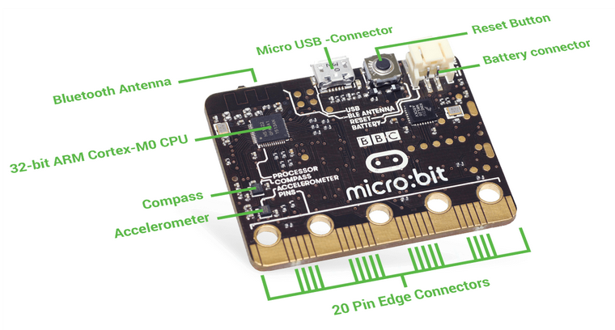
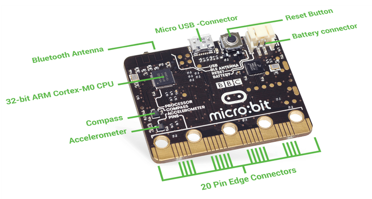
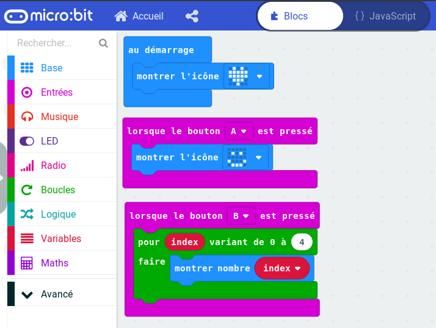
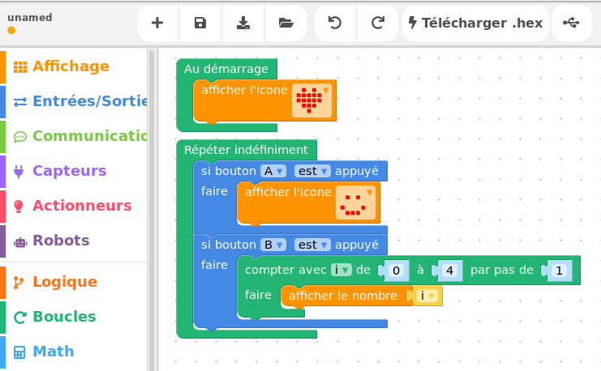
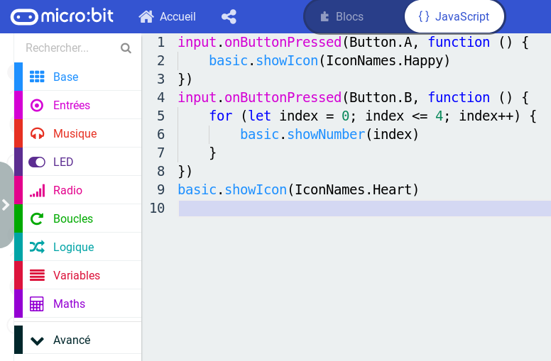
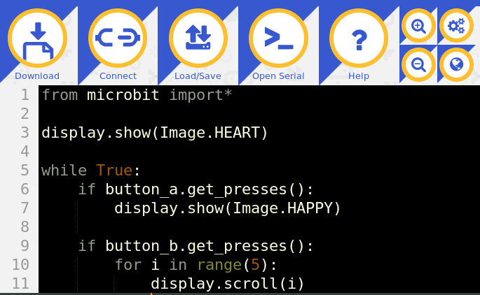
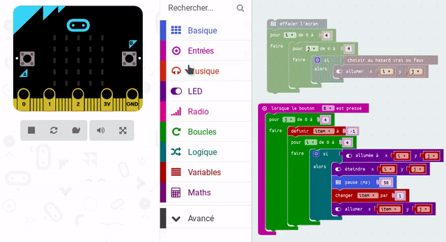

Micro:Bit
un objet programmable pour faire des maths

Présentations
Animateurs d’atelier
Qui ?
Bruno Bourgine & Pascal Padilla
Quoi ?
Professeurs de Mathématiques et Sciences Physiques en Lycée Professionnel
Où ?
IREM Marseille
Groupe InEFLP
Innovation
Formes scolaires innovantes
Expérimentation
Micro-contrôleur
Formation
Algorithme
À propos de cet atelier
Programmer des objets connectés pour faire des maths.
- Comprendre les objets de notre environnement.
- Des objets pour mesurer et communiquer.
- Des objets pour faire des maths.
Déroulement de cet atelier
(théorique)
- Découverte du Micro:bit
- La programmation par bloc
- La programmation en Python
Découvrons le Micro:Bit


Activité de découverte

-
Mais qu’est-ce que ça fait ?
-
Est-ce que c’est équiprobable ?
Équipement de série …
 

Programmation …
…avec des blocs (Makecode, Blockly)
 
Programmation …
…avec du code (Javascript, Python, C/C++)
 
Petit quizz !

À propos du tirage aléatoire
Discussion :
- quel intéret ?
- quelle plus-value ?
Programmation par blocs
Makecode

- interface en ligne https://makecode.microbit.org/
- programmation par bloc ou en javascript
- simulateur
Makecode

Exemples d’activités …
- Fractions
- Pile ou Face
- Dé
- Fluctuation d’échantillonnage
Programmation Python
mu-editor

Afficher un texte
from microbit import *
display.scroll("Hello,")
display.show("World!")
Terminal et sortie graphique
from microbit import *
import random
nb1 = 0
total = 0
for i in range(1000):
tirage = random.randint(0,1)
total = total + 1
nb1 = nb1 + tirage
nb0 = total - nb1
print((i, nb1/total, nb0/total))
Des images
from microbit import *
display.show(Image.HAPPY)
sleep(1000)
display.show(Image.ANGRY)
sleep(1000)
display.clear()
Les boutons
from microbit import *
sleep(10000)
display.scroll(str(button_a.get_presses()))
Le mouvement
from microbit import *
while True:
capteur = accelerometer.get_x()
if capteur > 40:
display.show(Image.ARROW_E)
elif capteur < -40:
display.show(Image.ARROW_W)
else:
display.show("-")
Les gestes
from microbit import *
import random
button_b.was_pressed()
while True:
display.show("8")
if accelerometer.was_gesture("shake"):
display.clear()
sleep(1000)
display.scroll(random.choice(["Oui","Non"]))
if button_b.was_pressed():
display.clear()
break
La radio
from microbit import *
import radio
import random
while True:
if button_a.was_pressed():
radio.send("A")
if button_b.was_pressed():
radio.send("B")
# récepteur
incomming = radio.receive()
if incomming == "A":
display.scroll("A")
if incomming == "B":
display.scroll("B")
sleep(20)
Petit quizz !
Pour aller plus loin
Augmenter votre micro:bit !
- Kit d’extension : ajouter des capteurs et des interfaces
- Scratch : faire interagir micro:bit et Scratch c’est facile!
- Vittascience : passer facilement du bloc à python, et utiliser micro:bit pour des projets scientifiques (ballon solaire)
Classroom
- Partager du code
- Superviser les travaux des élèves
- Sauvergarder des sessions de travail
… Rendez-vous à la
5ème journée sur l’enseignement de l’informatique
mercredi 25 mars
(Luminy)…
Activité de recherche
Problématique
On utilise une boucle de n itérations pour allumer aléatoirement les diodes du Micro:bit.